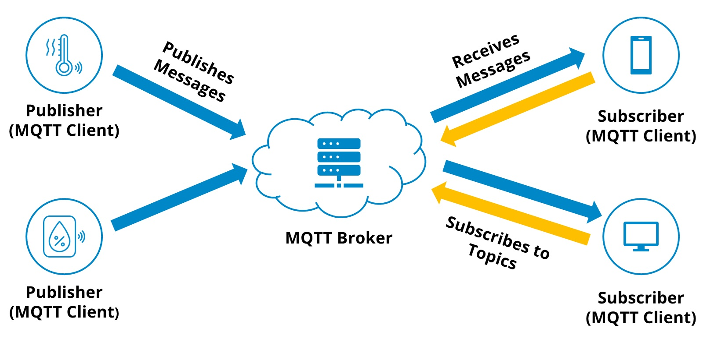
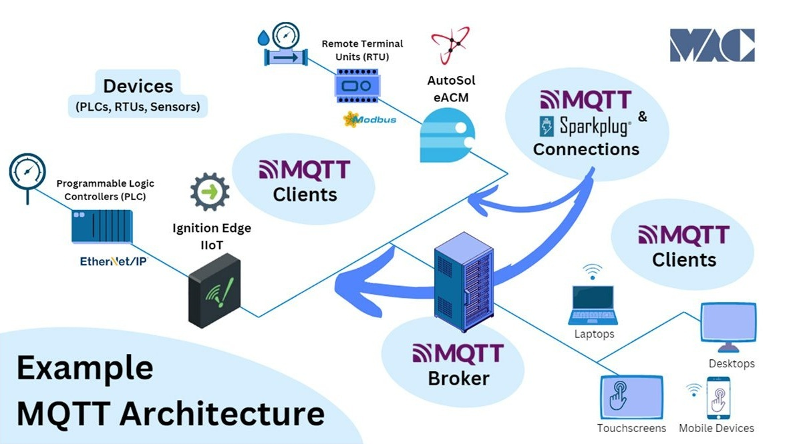

MQTT (MESSAGE QUEUING TELEMETRY TRANSPORT)
ESTRUTURA FÍSICA E CABEAMENTO
MQTT EM REDES INDUSTRIAIS E SISTEMAS IIOT
MQTT é um protocolo de mensagens da camada de aplicação que utiliza o modelo Publicação/Assinatura (Publish/Subscribe). Um dispositivo ou aplicação publica informações em tópicos, enquanto os clientes interessados assinam esses tópicos para receber as mensagens. Um servidor intermediário chamado broker recebe as publicações e distribui os dados aos assinantes correspondentes. O protocolo foi projetado para ser leve e adequado a ambientes com dispositivos e enlaces que possuem recursos limitados. [4]
Na indústria, MQTT é utilizado para transportar dados de máquinas, sensores, gateways e sistemas de supervisão até aplicações de monitoramento, análise de dados, plataformas IIoT e serviços em nuvem. Ele não substitui necessariamente os protocolos de controle em tempo real do chão de fábrica; normalmente complementa as redes industriais ao disponibilizar dados para integração e análise.

MEIOS DE TRANSMISSÃO E INFRAESTRUTURA DE COMUNICAÇÃO
O MQTT não define um cabo ou meio físico próprio. Ele funciona sobre um transporte que ofereça um fluxo ordenado e confiável de bytes; a utilização mais comum é TCP/IP. Assim, a comunicação pode atravessar diferentes meios físicos, como Ethernet em cobre, fibra óptica, Wi-Fi ou redes celulares, desde que exista conectividade IP entre o cliente e o broker. [4]
- Ethernet em par trançado: muito utilizada para conectar PLCs, gateways industriais, computadores e servidores a switches da rede local.
- Fibra óptica: pode ser utilizada nos backbones e nos enlaces entre áreas, switches e centros de processamento. A fibra transporta os dados IP, enquanto o MQTT continua operando na camada de aplicação.
- Wi-Fi e redes celulares: permitem a conexão de equipamentos móveis, remotos ou distribuídos quando o projeto necessita de mobilidade ou comunicação fora da infraestrutura cabeada.
- Broker local ou em nuvem: pode ser instalado em um servidor da própria planta, em um gateway de borda (edge) ou em uma plataforma externa. A localização do broker influencia a arquitetura, a latência e a dependência do enlace de comunicação.
CONECTORES PADRONIZADOS E IDENTIFICAÇÃO
Como MQTT não estabelece a camada física, também não define conectores próprios. Os conectores utilizados dependem da interface de rede que transporta TCP/IP e do equipamento instalado.
- RJ45 (8P8C): utilizado em portas Ethernet de PLCs, gateways, switches, computadores e servidores.
- M12 industrial: pode ser utilizado em equipamentos industriais com Ethernet, especialmente quando se exige conexão mecânica robusta e proteção ambiental. O tipo de codificação deve ser compatível com a interface e a velocidade utilizadas.
- LC/SC para fibra óptica: aparecem em módulos ópticos e equipamentos de rede que interligam segmentos Ethernet por fibra.
- Antenas e interfaces sem fio: Wi-Fi e redes celulares utilizam suas próprias antenas e interfaces de rádio; esses elementos pertencem à tecnologia de acesso e não ao protocolo MQTT.
TOPOLOGIAS SUPORTADAS NA INFRAESTRUTURA IP
A topologia física e lógica de uma comunicação MQTT é herdada da rede IP utilizada. O modelo de aplicação é organizado em torno dos clientes e do broker, mas os equipamentos podem estar distribuídos por diferentes switches, roteadores, enlaces sem fio e segmentos de rede.

- Estrela e árvore: são comuns em redes Ethernet industriais, nas quais clientes e broker se conectam a switches de acesso e distribuição.
- Anel ou malha: podem existir na infraestrutura IP para aumentar a disponibilidade ou oferecer caminhos alternativos, dependendo dos protocolos de redundância e dos equipamentos utilizados.
- Comunicação remota: clientes podem publicar e receber mensagens por redes roteadas ou pela Internet, desde que o acesso ao broker esteja permitido e protegido por políticas de segurança.
INTERFACE ELÉTRICA E TRANSMISSÃO DE SINAIS
SINALIZAÇÃO E NÍVEIS ELÉTRICOS
O MQTT não especifica níveis de tensão, codificação elétrica, modulação óptica ou frequência de rádio. Esses parâmetros pertencem à tecnologia física e de enlace utilizada para estabelecer a conexão IP. Em Ethernet de cobre, por exemplo, a sinalização é definida pelo padrão Ethernet correspondente; em fibra, os dados são transmitidos por pulsos de luz; em Wi-Fi, utilizam-se sinais de radiofrequência.
- Camada física: define o tipo de sinal, a potência, a codificação e os conectores empregados no enlace.
- Camada de transporte: no uso convencional, o MQTT utiliza TCP, que fornece um fluxo ordenado e confiável entre cliente e broker. A especificação também admite outros transportes que atendam aos requisitos de entrega ordenada e sem perda do fluxo de bytes.
- Taxa de símbolos e baud rate: não são definidos pelo MQTT. Dependem da tecnologia física subjacente e não devem ser atribuídos diretamente ao protocolo de mensagens.
ALIMENTAÇÃO PELO BARRAMENTO
O MQTT não fornece energia elétrica pelo meio de comunicação. Os sensores, controladores, gateways, switches e servidores necessitam de alimentação própria ou de uma solução de energia prevista pela infraestrutura física.
- Alimentação local: equipamentos industriais normalmente utilizam fontes CC ou fontes integradas, conforme a especificação de cada dispositivo.
- PoE: quando a conexão física utiliza Ethernet compatível, a energia pode ser fornecida por PoE de acordo com padrões IEEE 802.3. Essa alimentação pertence à infraestrutura Ethernet, não ao MQTT.
- Equipamentos remotos: dispositivos conectados por Wi-Fi ou rede celular podem utilizar fontes locais, baterias ou sistemas de energia dedicados.
ISOLAÇÃO E PROTEÇÃO CONTRA RUÍDOS
A imunidade a interferências depende do meio físico escolhido. O MQTT não realiza blindagem nem corrige interferências eletromagnéticas no cabo ou no rádio; ele utiliza os mecanismos da rede e do transporte para manter a comunicação entre os clientes e o broker.
- Em Ethernet de cobre: utilizar cabeamento industrial adequado, blindagem quando necessária, aterramento planejado, separação de cabos de potência e proteção contra surtos conforme o ambiente.
- Em fibra óptica: o enlace é imune a interferências eletromagnéticas no próprio meio óptico e pode ser vantajoso entre áreas com diferenças de potencial ou elevado ruído elétrico.
- Em Wi-Fi ou rede celular: é necessário considerar interferência de radiofrequência, intensidade do sinal, obstáculos, cobertura e disponibilidade do enlace.
- Segurança da comunicação: TLS pode proteger a conexão por criptografia e autenticação; credenciais, certificados, permissões por tópico e segmentação da rede devem ser configurados. A segurança lógica não substitui a proteção elétrica e física.
PROTOCOLO DE ENLACE E ACESSO AO MEIO (MAC)
MÉTODO DE COMUNICAÇÃO PUBLICAÇÃO/ASSINATURA
FUNCIONAMENTO ENTRE CLIENTES E BROKER
O MQTT não utiliza um método próprio de acesso ao meio físico nem uma arbitragem de barramento como o CAN. O acesso ao meio é determinado pela rede subjacente, por exemplo, Ethernet com switches ou Wi-Fi com seus mecanismos de contenção. Na camada de aplicação, o MQTT organiza a troca de mensagens por meio do modelo publicação/assinatura.
- Publisher (publicador): cliente que envia uma mensagem a um tópico, sem precisar conhecer diretamente todos os destinatários.
- Subscriber (assinante): cliente que registra interesse em um ou mais tópicos e recebe as mensagens que correspondem às suas assinaturas.
- Broker: servidor que aceita conexões, recebe publicações, administra assinaturas e encaminha mensagens aos clientes interessados.
- Tópicos (Topics): nomes hierárquicos que organizam as mensagens, por exemplo, fabrica/linha1/motor1/temperatura. Os filtros de assinatura podem utilizar curingas conforme as regras do MQTT.
NÍVEIS DE QUALIDADE DE SERVIÇO (QOS)
O MQTT define três níveis de Quality of Service (QoS), que controlam o nível de confirmação da entrega de cada mensagem entre um emissor e um receptor. O nível configurado influencia a quantidade de mensagens de controle, a latência e a possibilidade de duplicidade. [4]
- QoS 0 — At most once: a mensagem é enviada sem confirmação e sem retransmissão pelo mecanismo QoS. Pode chegar uma vez ou não chegar.
- QoS 1 — At least once: o protocolo utiliza confirmação de recebimento e pode retransmitir a mensagem até obter a confirmação. Garante entrega pelo menos uma vez, podendo ocorrer duplicidade.
- QoS 2 — Exactly once: utiliza uma troca de pacotes de controle mais extensa para assegurar que a mensagem seja entregue exatamente uma vez dentro do fluxo QoS entre os participantes.
- Retained Message e Last Will: o recurso Retain permite ao broker armazenar a última mensagem retida de um tópico para novos assinantes. O Last Will permite publicar uma mensagem previamente configurada quando a conexão de um cliente termina de forma inesperada.
ESTRUTURA DO QUADRO E MENSAGEM MQTT
O MQTT transmite pacotes de controle (MQTT Control Packets). Cada pacote possui um cabeçalho fixo e, conforme o tipo, pode conter cabeçalho variável e payload. O conteúdo do payload é definido pela aplicação e pode transportar valores numéricos, texto, JSON, dados binários ou outros formatos. [4]
CAMPOS PRINCIPAIS DOS PACOTES DE CONTROLE
- Fixed Header (Cabeçalho Fixo): presente em todos os pacotes. Identifica o tipo de pacote e inclui flags específicas; também informa o comprimento restante do pacote.
- Variable Header (Cabeçalho Variável): presente em determinados pacotes, com campos que variam conforme a operação. Pode conter identificador de pacote, nome de tópico ou propriedades.
- Payload: presente nos pacotes que transportam dados ou parâmetros de operação. No PUBLISH, contém a mensagem da aplicação publicada no tópico.
- Packet Identifier: campo de identificação utilizado nos fluxos que exigem confirmação, como operações QoS 1 e QoS 2 e pacotes de assinatura.
MENSAGEM PUBLISH E TÓPICOS
O pacote PUBLISH transporta uma mensagem de aplicação do cliente ao broker ou do broker ao cliente. Na mensagem publicada, o cabeçalho variável contém o nome do tópico e, quando necessário, identificador de pacote e propriedades. O payload contém os dados propriamente ditos, cujo formato é definido pelos sistemas que publicam e consomem a informação.
- Endereço lógico de destino: o tópico identifica o canal de informação ao qual a mensagem está associada. O broker utiliza as assinaturas dos clientes para determinar quais participantes devem receber a publicação.
- Ausência de endereço MAC MQTT: o MQTT não define endereços MAC de origem e destino. Os endereços IP e MAC são tratados pelas camadas inferiores da rede.
CONFIRMAÇÃO E INTEGRIDADE
As confirmações de entrega dependem do nível QoS. No QoS 0 não há confirmação MQTT; no QoS 1, utiliza-se PUBACK; no QoS 2, ocorre uma sequência de controle que envolve PUBREC, PUBREL e PUBCOMP. A integridade do fluxo de bytes é apoiada pelo transporte e, quando habilitado, pela proteção criptográfica da conexão TLS. O MQTT não define um campo CRC próprio equivalente ao FCS de um quadro Ethernet.
PARÂMETROS OPERACIONAIS E DESEMPENHO
TAXA DE TRANSMISSÃO (BIT RATE / BANDWIDTH)
O MQTT não estabelece uma taxa física fixa em baud ou bits por segundo. A velocidade de transmissão depende da interface de rede, do transporte TCP/IP, da capacidade do broker, do tamanho das mensagens, do número de clientes conectados, da frequência de publicação e do QoS configurado.
INFLUÊNCIA DA REDE E DO QOS
- Largura de banda: é determinada pelo enlace utilizado, como Ethernet, fibra, Wi-Fi ou rede celular. A capacidade disponível pode ser compartilhada com outros serviços da instalação.
- Frequência das publicações: enviar mensagens com maior frequência aumenta o tráfego e o processamento exigido do broker e dos assinantes.
- Tamanho do payload: mensagens maiores consomem mais banda e podem exigir mais tempo de transmissão, especialmente em enlaces lentos ou congestionados.
- QoS: níveis mais elevados adicionam pacotes de confirmação e etapas de controle. Eles melhoram a garantia de entrega, mas podem aumentar o tráfego e o tempo necessário para concluir a troca.
PORTAS DE COMUNICAÇÃO E TRANSPORTE
- TCP 1883: porta convencional registrada para comunicação MQTT sem TLS.
- TCP 8883: porta convencional registrada para comunicação MQTT protegida por TLS.
- WebSocket: também pode transportar MQTT em aplicações compatíveis, por exemplo quando a comunicação precisa atravessar ambientes de aplicação web. A porta utilizada depende da configuração do serviço.
As portas indicadas são valores convencionais e podem ser alteradas pelo administrador. O MQTT requer um transporte que ofereça fluxo de bytes ordenado e confiável; a especificação cita TCP/IP e também admite outros transportes que atendam a esse requisito. [4]
DISTÂNCIA MÁXIMA DA COMUNICAÇÃO
O MQTT não estabelece distância máxima entre cliente e broker. O alcance depende dos enlaces físicos e da arquitetura IP utilizada: um segmento Ethernet de cobre possui limites próprios, a fibra pode atender distâncias maiores conforme os transceptores e a rede sem fio depende de cobertura, potência, antenas e obstáculos. A comunicação pode atravessar roteadores e redes remotas, desde que exista conectividade até o broker.
DETERMINISMO E TEMPO DE CICLO
- Classificação: o MQTT convencional é considerado não determinístico para controle industrial que exige tempo de ciclo rígido.
- Justificativa: a entrega depende do transporte TCP, do processamento do broker, das filas de mensagens, do QoS, do número de assinantes, do roteamento e da carga da rede. Retransmissões e congestionamento podem alterar a latência e a variação do atraso.
- Aplicação recomendada: é adequado para telemetria, monitoramento, alarmes não críticos, histórico de dados, integração entre sistemas e comunicação IIoT. Não deve substituir uma rede de controle de tempo real sem uma arquitetura específica e validação dos requisitos.
NÍVEL NA PIRÂMIDE DA AUTOMAÇÃO
- Classificação: atua principalmente nos níveis de Supervisão (Nível 2), Gerenciamento da Produção (Nível 3) e Integração Corporativa/IIoT (Níveis 4 e 5), conforme a arquitetura adotada.
- Justificativa: o MQTT permite que gateways e sistemas de supervisão compartilhem dados de máquinas com plataformas de análise, servidores, MES, ERP e serviços em nuvem. Os dispositivos de campo podem participar da comunicação por meio de clientes MQTT ou gateways, mas o protocolo é mais comum na integração e no transporte de telemetria do que no acionamento direto de malhas rápidas.